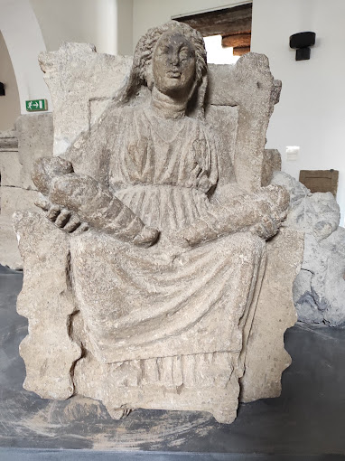

Home
Le federazioni osche
Localizzazione musei e siti
Chi siamo
Dove trovarci
Museo Archeologico dell'Antica Capua
Esemplari di
Matres
, oltre che nel museo di Capua, sono presenti anche al
Museo Archeologico di Santa Maria Capua Vetere.
Di seguito è riportata un'immagine.
